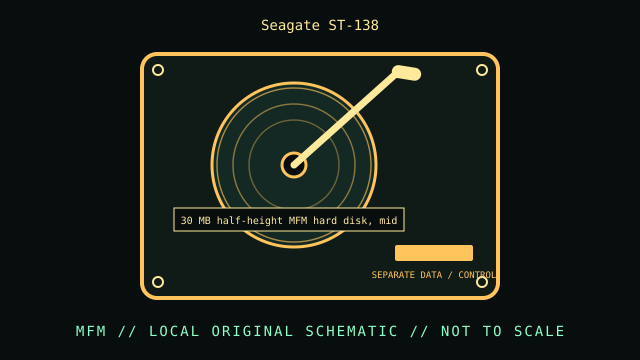

[ INDIVIDUAL COMPONENT // HARD DISK DRIVE ]
Seagate ST-138
30 MB half-height MFM hard disk, mid-1980s. This record is limited to the exact model and documented variant; related model numbers, revisions and capacities can have different interfaces and specifications.

IDENTIFICATION: Match the complete label, suffix, firmware and drive inquiry with the cited model documentation. Do not infer sector format or recording method from product family alone.
Verified model specifications
| Dedicated catalog subcategory | MFM and early magnetic drives |
|---|---|
| Exact model | Seagate ST-138 |
| Product generation | 30 MB half-height MFM hard disk, mid-1980s |
| Form factor | 5.25-inch half-height class; this classification is not a dimensional drawing. |
| Interface | ST-506/ST-412-compatible MFM; separate data and control cables. |
| Capacity, performance, sector / recording details | The Seagate installation handbook identifies ST-138 as a 30 MB-class MFM model. Geometry and formatted space depend on the matching controller and format; do not borrow ST-225 geometry. |
| Compatibility | Requires an MFM controller supporting the ST-138 geometry and correctly configured drive-select/termination. It is not an IDE/PATA disk. |
Handling, service & preservation
- Photograph the PCB, settings and cable positions before work. Keep the head-disk assembly closed; use stable power and avoid shock to the parked mechanism.
- Photograph the full label, board marks, connectors, jumpers/carrier, and date/firmware codes before service; retain the exact model suffix with collection metadata.
- Never open a hard drive outside a qualified clean environment. Stop repeated power-on attempts if the unit clicks, drops offline, or develops read errors.
- Preserve source data by making independent copies and validating checksums; SMART/self-tests cannot guarantee reliability. Distinguish measured condition from manufacturer specifications.
Model-specific source
- Seagate ST-412/ST-138 Installation Handbook (archival manual)Installation handbook covers the ST-138 alongside other specific Seagate MFM models; check the exact model section and board revision.
For variants with family manuals, use the model-specific table and document revision that matches the drive label.